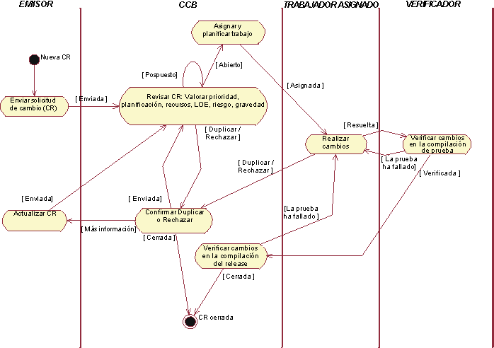
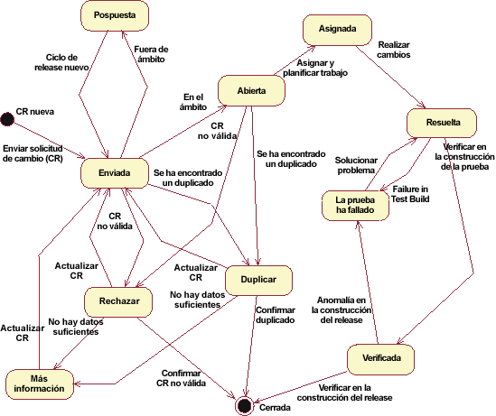

|
Objetivo: Los procedimientos de control de cambios garantizan que los cambios propuestos
en un sistema se valoran y se aplican de forma controlada y coherente.
|
|
Subpasos
|
|
Guías de herramientas
|
|
Más información: Concepto: Gestión de solicitudes de cambio
|
En el siguiente diagrama de actividad se muestra un procedimiento típico para gestionar
solicitudes de cambio. (Pulse en cualquier lugar del diagrama para obtener una descripción completa del Concepto: Gestión de solicitudes de cambio)

El formulario de solicitud de cambio es un artefacto enviado formalmente que se utiliza para realizar el seguimiento de
todas las solicitudes (incluidas las nuevas características, las solicitudes de mejora, los defectos, los requisitos
modificados, etc.). Debe incluir la información de estado relacionada de todo el ciclo de vida del proyecto. El
historial de cambios se mantendrá junto con la CR, incluidos todos los cambios de estado, y las fechas y los motivos de
dicho cambio. Esta información estará disponible para las revisiones repetidas y para el cierre final. En Producto de trabajo: Solicitudes de cambio se incluye un formulario
de solicitud de cambio de ejemplo.
Los estados típicos por los que puede pasar una solicitud de cambio se muestran en el siguiente diagrama de estado.
(Pulse en cualquier lugar del diagrama para obtener una descripción completa del Concepto:
Gestión de solicitudes de cambio)

Una vez que se ha enviado una solicitud de cambio, ésta se analiza para garantizar que es válida y que el personal
técnico y de gestión va a revisar la solicitud de cambio para valorar su validez. Las solicitudes de cambio deben
revisarse en diversos niveles del equipo de desarrollo. Un jefe de equipo a menudo revisará y aprobará las solicitudes
de cambio enviadas por cualquier miembro de su equipo. Sin embargo, si el ámbito de un cambio está fuera de la
responsabilidad del equipo, éste se escalará para el siguiente nivel de revisión. Si el impacto del cambio abarca
varios equipos de desarrollo, el comité de control de cambios revisará el cambio. En Rational Unified Process, el rol
del gestor de control de cambios se utiliza para representar el rol del comité de control de cambios (CCB).
A veces, una avería detectada en el sistema puede deberse más a su utilización que al hecho de estar enlazada con la
implementación del sistema. También podría ocurrir que el 'problema' ya se haya notificado y se está solucionando.
El resultado del paso de análisis puede ser aceptar la solicitud de cambio o rechazarla porque no es válida, está
duplicada o está 'fuera del ámbito' de acuerdo con la visión o mandato del proyecto actual.
Para los cambios válidos, el paso siguiente es valorar el coste del cambio en función del impacto que tiene sobre el
sistema global y si se puede implementar fácilmente o no.
La información del paso de coste se proporciona al CCB para su valoración. El CCB revisa la solicitud de cambio y su
impacto tanto desde el punto de vista estratégico y de organización como del punto de vista técnico. El CCB tiene que
decidir si la solicitud de cambio puede justificarse económicamente.
Una vez que se ha aprobado una solicitud de cambio, el cambio puede aplicarse al software. A continuación, el software
revisado se somete a comprobaciones de garantía de calidad para garantizar que el cambio se ha realizado de acuerdo con
la prácticas adoptadas del proyecto y que no afecta negativamente a otros componentes del software existente.
Una vez efectuados los cambios, la nueva versión del software se verifica en una compilación de prueba del producto y
luego se incorpora y se verifica en una versión de 'release' del software global.
A medida que se realizan los cambios en el software, es importante que se mantenga un registro de todos los cambios.
Una forma eficaz de mantener un historial de cambios es al principio de cada componente de software y dentro de las
solicitudes de cambio.
Un ejemplo del tipo de datos de cambio que se deben mantener en una cabecera de componente podría ser el siguiente:
Historial de modificaciones
Versión Modificador Fecha Motivo del cambio
1.1 Bruce Bogtrotter 98.05.01 Intervalos de prueba CR#232
1.2 Maria Mussolini 98.06.02 Requisitos CR#454
|